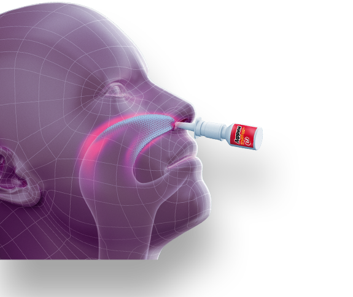

Про Африн
Африн. Мощный ответ насморку
Спрей от насморка
с запатентованной формулой устраняет заложенность носа.
-
Фиксируется
на слизистой носа -
Воздействуя на эпицентр
заложенности -
Способен
к действию
с первой минуты
